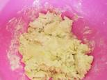
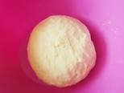
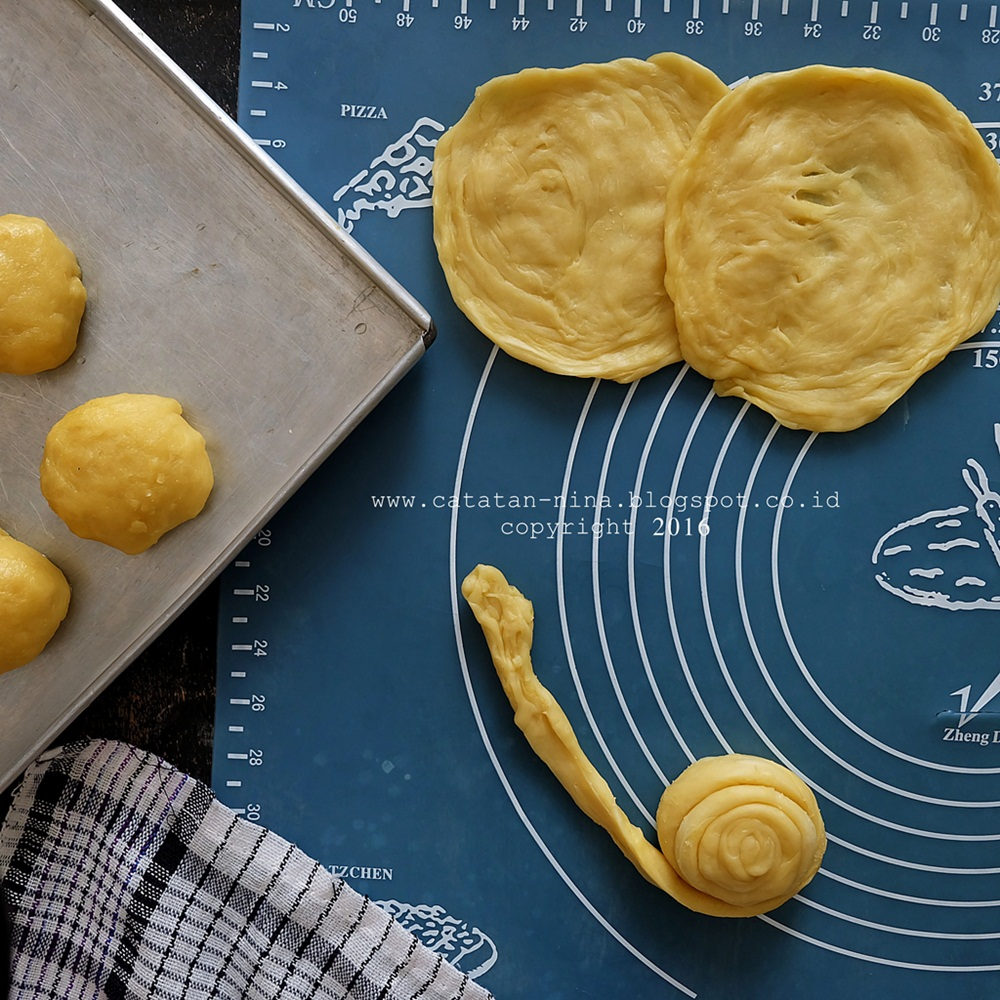

Resep Roti Maryam

Bahan-Bahan:
250gr tepung terigu
1 butir telur
3 sdm margarin, lelehkan
100ml air hangat
2 sdm susu bubuk(optional)
1/2 sdt garam
margarin leleh untuk olesan
minyak untuk merendam
1. campur semua bahan roti jadi satu.

2. uleni sampai kalis, jangan takut adonan lengket ya, lumuri tangan sesekali denga tepung terigu (tapi jangan menambahkan tepung terigu) uleni terus sampai adonan kalis

3. kalisnya adonan canai? maryam tidak sekalis adonan roti ya! sampai seperti ini saja sudah cukup.

Terima kasih